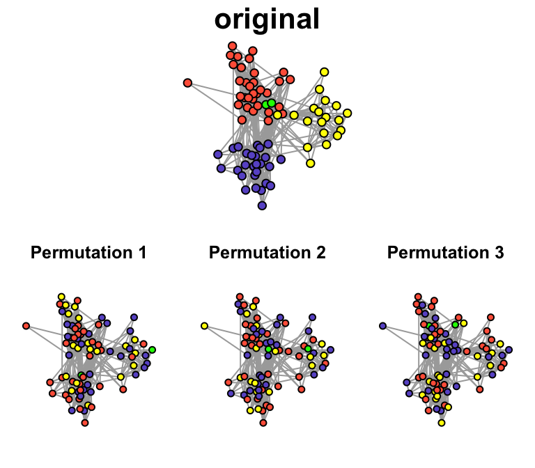
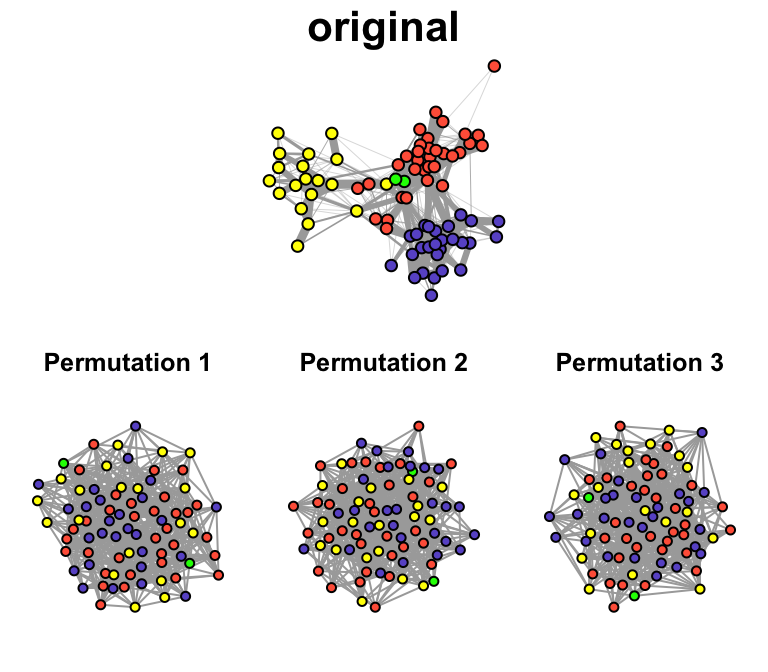

- Testing against the Null Hypothesis: Permutations and Randomizations
Dai Shizuka
7/12/2018
Packages you’ll need:
library(asnipe)
library(igraph)
library(assortnet)Thus far, we have learned how to measure empirical networks in a variety of ways. However, we are often not satisfied with simply constructing and measuring networks. What we really want to know is: does our empirical network show some patterns that deviates from a random process?
This brings us to hypothesis testing–that is, we want to compare the properties of our networks against some baseline, i.e., a null hypothesis/model. That is, we can ask the question: is our network non-random?
The problem with this simplistic question, however, is that no real network is ever random. There are a multitude of factors that make networks deviate from an idealized Erdös-Renyí random graph (see [7. Random Graphs)(07_randomnets.html))
Because most networks are complex and relational data do not conform to the requirement of non-independence of data, we often use randomizations/permutations to generate null models against which we can compare the empirical data. Here, we focus narrowly on some classic forms of null model hypothesis testing using randomizations. In the context of animal social networks, there have been a couple of good review and tutorial of this method (Croft et al. 2011; Farine & Whitehead 2015). We will provide a quick overview here.
8.1 Node-label Permutations
Node-label permutations involve shuffling the node type or node values (e.g., sex, size, etc.) randomly across all nodes in a network, while keeping the edges the same. This ensures that the inherent structural pattern of the network remains the same, but the node values are randomized. This type of randomization scheme may be appropriate when you are interested in understanding how node attributes affect connectivity of nodes, e.g.:
- testing correlations between node attribute and network position
- using as null model for assortativity
8.1.1 Example with…
8.2 Edge Permutations
May be appropriate when:
- Not necessarily testing for the roles of particular node types
- Testing whether structure of network is non-random… but what is random?
- Must be careful about exactly how we permute edges–do we want to preserve any aspect of the connectivity of nodes?
8.2.1 Unconstrained edge permutations
One straight-forward way to randomize edges in a network is to generate ‘random graphs’ in which there are the same number of nodes and edges as the empirical network, but the edges are now distributed randomly. One can create such networks by generating a ‘Erdös-Renyí random graph’ or by ‘rewiring’ the network randomly.
8.2.2. Edge rewiring while keeping the degree distribution constant
Alternatively, we may want to ask whether the degree distribution itself may affect the clustering coefficient of the network. That is, if the distribution of node degrees is non-random, that alone may cause the clustering coefficient to be larger than expected by Erdös-Renyí random graph. We can implement this with the rewire() function as well, with a different method. I’ll briefly explain how this edge rewiring method works. This method is sometimes called the “switching” algorithm because it works by identifying two edges that connect different pairs of edges and then switches the ends of these nodes (illustrated below). Milo et al. (2003) found that this method works well and produces a randomized graph after implementing this switching step \(m\) number of times, where \(m\) is the number of edges in the network.
Figure illustrating the rewiring algorithm to preserve the degree distribution. The numbers in the nodes represent their degrees. In one step of the switching algorithm, we identify a pair of connected nodes that themselves are not connected to each other (represented in different colors), and we simply swap the ends of the two edges. You can see that this does not change the degree of the nodes.
8.3 Group membership permutation
The edge randomization with constant degree sequence as described above preserves much more of the network structure than a completely random graph. However, these edge randomization methods are both using association indices that are non-random based on the group membership of individuals. An alternative way to conduct a randomization is to permute the group membership data (i.e., the original group-by-individual matrix) such that we randomize which group (e.g., flock) that each individual is in. Now I will explain how the group membership swapping works. This method is sometimes called the “swap algorithm”, or “flipping procedure”. It is actually the same algorithm that community ecologists use to generate a null model for species co-occurrences (see Manly 1995; Gotelli 2000; Ulrich & Gotelli 2007). It has been adapted for generating a null model for social associations in animals by Bejder et al. (1998) and advocated for use in social network studies (Whitehead et al. 2005).
Step 1: Identify a 2x2 sub-matrix within the bipartite matrix that looks like: \(\begin{bmatrix} 0 & 1 \\ 1 & 0 \\ \end{bmatrix}\)
Step 2: Swap the row/columns so that the 2x2 matrix looks like: \(\begin{bmatrix} 1 & 0 \\ 0 & 1 \\ \end{bmatrix}\)

Figure: One iteration of the sequential swap process. You can see that the row and column totals remain the same after each swap.
There are generally two ways to generate a P-value using the group membership swapping algorithm. First, one could repeat the swaps until the test statistic of interest (modularity in this case) stabilizes to a range of values corresponding to a randomized matrix, and then repeat this procedure a large number of times, say 1,000 times, to calculate a distribution of the test statistic under the null model (let’s call it the ‘global test’). Alternatively, one can run a large number of swaps from a single initial matrix, calculating a test statistic after each ‘swap’ of the matrix, and compare this distribution against the empirical test statistic (‘serial test’). Manly (1995) discusses why the serial method is a valid method for testing whether the empirical matrix is non-random as long as we conduct a very large number of swaps. I will not get into the logic behind this: I highly recommend reading the Manly (1995) and references therein. The ‘serial test’ method is much more computationally efficient than the ‘global test’.
Remove… too complicated
8.1.1 Example with flock simulation
Let’s re-create the flock simulation from section 8. In this simulation, we set up 50 individuals with variation in a trait as well as variation in gregariousness (probability of joining a given flock). Based on these parameters, we simulate observations of 100 flocks, then create a network.
set.seed(2)
n=50 #populatoin
trait=sort(rnorm(n,mean=20, sd=5), decreasing = T) #trait
p=sort(runif(n, min=0.01, max=0.1)) #gregariousness
f=100 #number of flock observations
#Now set up and construct simulated flock observations
ibg=matrix(0,nrow=n, ncol=f)
for(i in 1:n){
for (j in 1:f){
ibg[i,j]=sample(c(1,0), 1, prob=c(p[i], 1-p[i]))
}
}
#calculate association index (simple ratio index) from this individual-by-group matrix.
adj=get_network(t(ibg), data_format="GBI", association_index="SRI")## Generating 50 x 50 matrix#create and plot network, with vertex size proportional to trait value
g=graph_from_adjacency_matrix(adj, "undirected", weighted=T)
plot(g,vertex.size=trait/2, vertex.label="", edge.width=E(g)$weight*5)We showed in this simulation that degree centrality is correlated to the trait:
plot(trait, degree(g), pch=19)
cor.test(trait, degree(g))##
## Pearson's product-moment correlation
##
## data: trait and degree(g)
## t = -8.0451, df = 48, p-value = 1.883e-10
## alternative hypothesis: true correlation is not equal to 0
## 95 percent confidence interval:
## -0.8556276 -0.6075387
## sample estimates:
## cor
## -0.7577462Now, let’s test whether this pattern is statistically significant. That is, what is the probability that one would get this level of correlation between trait and degree by chance?
First, let’s store the correlation coefficient from our observed (simulated) network:
obs.cor=cor(trait, degree(g))
obs.cor## [1] -0.7577462Now, what we want to do is figure out what would be the correlation coefficient between trait and node degree if the trait value was randomized across individuals. This is what is called node label permutation.
What we need to do is randomize the trait value across individuals.
Here is one way:
V(g)$trait=trait
V(g)$trait.random=sample(V(g)$trait, length(V(g)$trait), replace=F)
plot(V(g)$trait.random, degree(g))
cor(V(g)$trait.random, degree(g))## [1] 0.1578334Now, we will conduct this randomization a large number of times (say 1000 times) and measure the correlation coefficient each time. This will generate a null distribution of the correlation coefficient.
times=100
randomized.networks=list()
for(i in 1:times){
V(g)$trait.random=sample(V(g)$trait, length(V(g)$trait), replace=F)
randomized.networks[[i]]=g
}
cor.random=sapply(randomized.networks, function(x) cor(V(x)$trait.random, degree(x)))
hist(cor.random, xlim=c(-1,1))
abline(v=obs.cor, lty=2, col="red")
p.value=length(which(cor.random<=obs.cor))/(times+1)
p.value## [1] 0